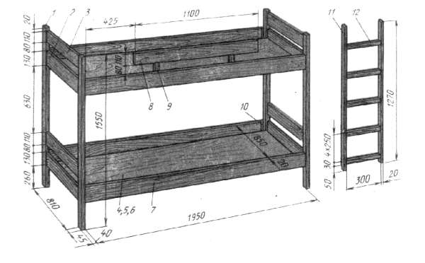
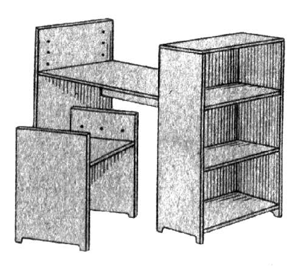
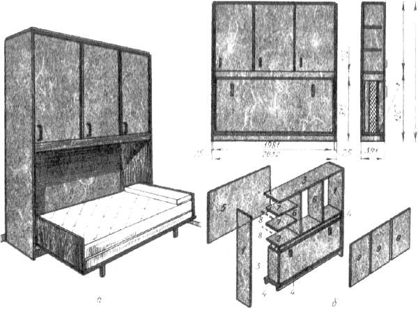
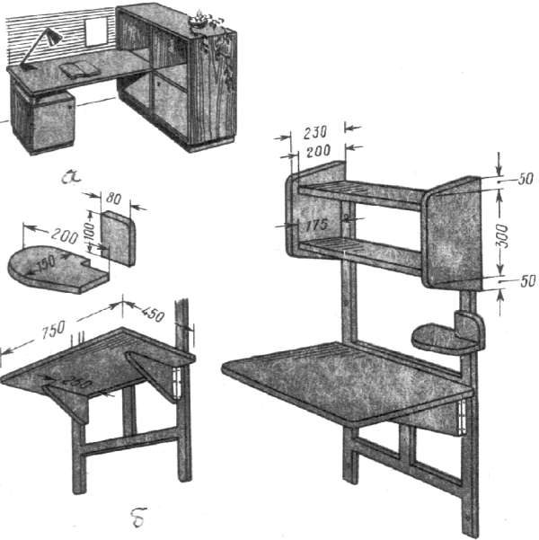

Детская комната.

У ребенка в квартире должна быть отдельная комната или хотя бы свое собственное место. Если отдельной комнаты нет, уголок общей комнаты нужно оборудовать так, чтобы у ребенка было место для хранения игрушек, учебников, чтобы у него было играть, заниматься рукоделием и готовить уроки.
При выборе материалов для оборудования комнаты ребенка надо позаботиться об их надежности, предметы мебели должны выдержать максимальные сроки использования. Сейчас выпускается много различных материалов для облицовки стен и пола, изготовления мебели, что открывает широкие возможности для изобретательного и инициативного человека. Вместе с тем, надо учитывать и важные ограничения. Во всех случаях надо проверить экологические свойства каждого конкретного материала, клея или краски. Сейчас, как в лесу, а в лесу самые красивые грибы – мухоморы.
Далее. Материал, который мы будем использовать для обустройства жизненного пространства ребенка, должен позволять беспроблемную уборку – влажную и сухую. Короче говоря, – вещи должны обеспечить детям максимум свободы действий, а родителям – минимум работы по соблюдению гигиены и порядка в детской комнате.
Наибольший интерес представляют проекты детских кроватей, что объясняется легко: кровать занимает очень много места. Детская постель – это маленькая кроватка для ребенка дошкольного возраста и кровать нормальных размеров для взрослого. Каждый ребенок должен иметь свою отдельную постель, однако в городской квартире это не всегда выполнимо. Родители, имеющие двоих или более детей, вынуждены идти на различные ухищрения: делать или покупать двухэтажные кровати; ставить кровати параллельно или под прямым углом, на одном уровне вдоль двух противоположных стен и т. д.
Не всегда удается учесть правила. Так, при выборе места для кровати нужно учитывать, что свет из окна должен правильно падать на нее, т.е. не прямо в глаза, а сбоку или сзади.
Для детской кровати надо предусмотреть гигиеничный вкладыш из поролона в простом чехле из синтетической ткани. Дно кровати должно быть твердым, но достаточно эластичным (из фанеры или древесноволокнистой плиты с отверстиями для вентиляции). Чтобы днем на кровати можно было сидеть, постельное белье, включая подушку и одеяло, должно складываться и куда-то убираться. Впрочем, не куда-то, а в непосредственной близости от кровати.
Итак, больше всего места можно сэкономить за счет кроватей, которые могут быть раскладными, откидными или установленными одна над другой. Преимущество последнего решения заключается в том, что не нужно затрачивать много усилий, чтобы раскладывать кровать перед сном и складывать ее после сна. Кроме того, постелью можно воспользоваться в любое время дня.
Основная часть конструкции двухъярусной кровати – рама, изготовленная из деревянных брусков сечением 30 ? 60 мм, соединенных на шип. Рама покрыта древесностружечной плитой или древесноволокнистыми плитами. Стойки изготовлены из твердой древесины (дуба, бука, ясеня). Боковые и передние стенки кровати делают из сосновых досок. Планки передних стенок заглублены в стойки и соединены в шип, их крепят к боковым планкам рамы шипами с шагом 200 мм.

Рис. 95. Двухъярусная кровать
Для изготовления передних стенок можно использовать мебельные панели. Передние стенки сделаны из древесностружечной плиты шириной 320 мм, соединенной шипами со стойками. Постель крепят к стойкам клиновыми подвесками, длина которых укорочена до 130 мм. Стойка лестницы и поперечная планка сделаны из буковой или дубовой древесины. Поперечные планки заглублены в стойки, соединены в шип и закреплены клиньями.
Лестницу можно закрепить шурупами, завинтив их прямо в боковую стенку кровати, или при помощи соответствующих подвесок, которые крепят к боковым стенкам.
Сначала устанавливают раму. Прямоугольное положение проверяют шпагатом, натянув его по диагонали, или угольником. После этого приклеивают древесностружечную плиту и закрепляют ее шпонками. Углы рамы следует оформить в соответствии с рисунком, т. е. необходимо сделать вырезы для клиновых подвесок. После этого можно просверлить отверстия для круглых шипов в боковых стенках и в боковых планках рамы.
Посредине боковой планки рамы обозначают место забивки шпонки. То же самое делают и в боковых стенках, после чего просверливают оба отверстия. Затем во вспомогательной планке размером 10 ? 30 ? 1000 делают отверстия для шипов с шагом приблизительно 200 мм. Эту планку прикладывают к боковой раме, шпонке и по шаблону просверливают в одной половине рамы соответствующие отверстия для шпонки. Отверстия в другой половине рамы просверливают, поворачивая планку вокруг шпонки, вставленной в отверстие посередине боковой планки рамы. Вспомогательную планку прикладывают обратной стороной к боковой стенке и также просверливают в ней соответствующие отверстия, по очереди в обеих половинах планки рамы. К противоположной стороне, расположенной против детали, шаблон следует прикладывать обратной стороной и не переворачивать его. Это служит гарантией точного размещения отверстий, не требующего трудоемких контрольных намерений. Отверстия в боковых стенках должны быть глухими. Лучше всего вспомогательные отверстия делать с использованием ограничителя, который можно сделать из трубки или из деревянного бруска соответствующей длины, насаженного на сверло. К боковым стенкам привинчивают детали клиновых подвесок для крепления постели. Противоположные детали нужно пометить, так как подвески имеют неодинаковые размеры.
Теперь можно приступить к монтажу. Монтируют стойки, соединенные в шип в передние стенки. Боковые стенки соединяют с рамой при помощи круглых шипов. На клей сажают лишь те шипы, которые в первую очередь вставляют в глухие отверстия в боковых стенках. Далее монтируют обе передние стенки постели и обозначают на стойках места отверстий для шурупов клиновых подвесок постелей. Монтируют лестницу и прикрепляют ее шурупами к боковым стенкам. Наконец, привинчивают к верхней постели предохранительные планки.
Поверхности покрытых лаком деталей отделывают до сборки кровати. Отшлифованную поверхность покрывают тремя слоями нитролака, после этого обрабатывают тонкой шкуркой и протирают. Затем обработанную поверхность слегка полируют до получения глянца. Обработанная таким образом естественная поверхность сосновых досок и передних стенок выглядит намного свежее, чем облицованная шпоном. Боковые и передние стенки можно также облицевать пленками.
Рассмотрим проект двухъярусной кровати щитовой конструкции.

Рис. 96. Двухъярусная кровать щитовой конструкции
Верхняя кровать легко снимается и может быть установлена рядом. Вертикальные бруски (стойки кровати) стыкуются на вставные стальные стержни диаметром 10 мм. Глубина запрессовки в нижний брусок не менее 80 мм, глубина захода в верхний – такая же. Надежность крепления обеспечивается прочностью материала (бук, дуб, ясень). Нижняя кровать состоит из четырех брусков, двух спинок и двух царг. Под кроватью размещают выдвижной ящик для хранения постельного белья.
Материалом для изготовления этой кровати служит облицованная столярная или древесностружечная плита толщиной 20 мм, бруски из твердых пород древесины сечением 40 ? 40 мм, 40-20 мм, 40 ? 30 мм, фанера толщиной 5-6 мм.
На стойках высверливают отверстия под круглые шипы для соединения со спинками и гнезда под личинки для вставки в них крючков, укрепленных на концах царг (как в обычных деревянных кроватях). Сверху высверливают отверстия для запрессовки металлических стержней диаметром 10 мм. После установки личинок собирают стенки с брусками на вставных шипах с клеем. Количество шипов – не менее четырех на одну сторону.
На концах царг с помощью шурупов крепят крючки для соединения царг со стойками-спинками. На внутренних плоскостях царг на клею, с усилением шурупами крепят опорные планки под матрац. Аналогичным способом собирают и верхнюю кровать. Исключение составляет передняя царга, на верхнюю кромку которой крепят на трех опорных планках барьерную стенку. На концах стенки, как и на царгах, крепят соединительные крючки.
Лестницу собирают, как и в проекте описанном выше. Для ее устойчивости на третью ступеньку и переднюю нижнюю царгу кровати устанавливают промежуточную площадку, плотно сажая ее на металлические кронштейны. На верхних концах лестницы есть аналогичные крючки-кронштейны для захвата на верхней царге.
Ящик для постельного белья делают из четырех заготовок из облицованной плиты на вставных шипах с клеем. Изнутри снизу приклеивают четыре опорные планки сечением 20 ? 20 мм, усиливая соединение шурупами. На продольные планки заподлицо с ними снизу крепят две поперечные планки-полозки с выступами сечением 20 ? 40 мм, на которых выдвигаемый ящик будет скользить. Более рационально на полозки установить колесики.
Еще один проект – шкаф с встроенной откидной кроватью. Он рекомендуется для квартир небольшой жилой площади. Шкаф имеет верхнее отделение для белья, в нижнее отделение складывают на день кровать.

Рис. 97. Шкаф со встроенной откидной кроватью
Шкаф состоит из двух боковых стенок, верхнего и нижнего поликов, средней полки, трех подполочных брусков и трех дверок. Верхнее отделение имеет две средние стенки, две полки с подполочными брусками и заднюю стенку. Подполочные бруски можно заменить металлическими полкодержателями. Для изготовления такого шкафа необходимо иметь столярную или древесностружечную плиту, фанеру и пиломатериалы хвойных пород. Заднюю стенку шкафа изготовляют из фанеры, продольные подполочные бруски – из пиломатериала, остальные детали – из столярной или древесностружечной плиты. Подполочные бруски и заднюю стенку крепят шурупами, остальные детали соединяют между собой с помощью круглых вставных шипов на клею.
Сборку рекомендуется вести в следующей последовательности.
Сначала соединяют средние стенки с верхним поликом и полкой. Затем прикрепляют два продольных бруска к нижнему полику, соединяют боковые стенки с верхним и нижним поликами, продольными брусками и полкой. После этого прикрепляют заднюю стенку, укрепляют подполочные бруски к боковым стенкам и средним стенкам.
После сборки производят отделку шкафа и кровати.
Завершим ознакомление с проектами мебели для детей конструкцией рабочего стола для школьника.
Понятно, что ребенку необходим рабочий стол не только для подготовки домашних заданий, он будет за ним что-то мастерить лепить, рисовать, вырезать, шить, играть на компьютере.
Рабочее место можно организовать несколькими способами: сделать или купить детский письменный стол, доску секретера в составе «стенки» или шкафа, отдельную доску, положенную одним концом на тумбу, другим на полку шкафа. Однако полностью будет отвечать требованиям с учетом роста ребенка мебель, регулируемая по высоте. Заметим, что для двоих детей обязательно нужно иметь два рабочих места, отделенных друг от друга какой-нибудь низкой преградой. Практичнее и демократичнее иметь две маленькие доски, чем один большой рабочий стол, на котором будут разбросаны разные книги, тетради, приборы и пр., что приведет к спорам и беспорядку.

Рис. 98. Рабочее место школьника: а – со съемной доской (щитовой конструкции); б – рабочее место школьника столярной конструкции
Над столом или рядом с ним нужно предусмотреть доску, раму, обтянутую сукном или полотном, на которую дети могли бы прикрепить рисунки, иллюстрации. Кроме того, обязательна полка для книг, детских поделок, коллекций. Рядом со столом нужно найти место для школьного портфеля, важно, чтобы он имел свое постоянное место. На столе обязательно должна быть настольная лампа, установленная так, чтобы свет падал с левой стороны, сам стол должен быть расположен или у окна, или таким образом, чтобы естественное освещение (окно) находилось слева.